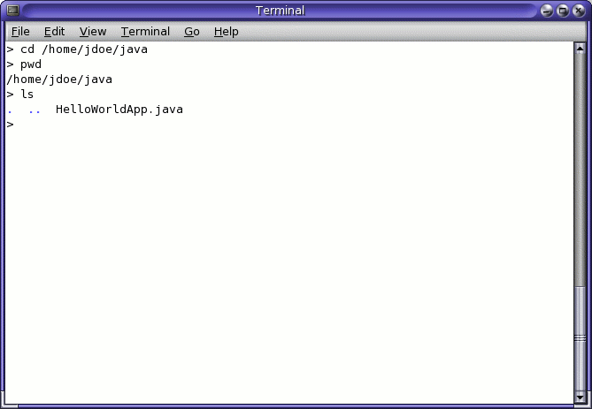
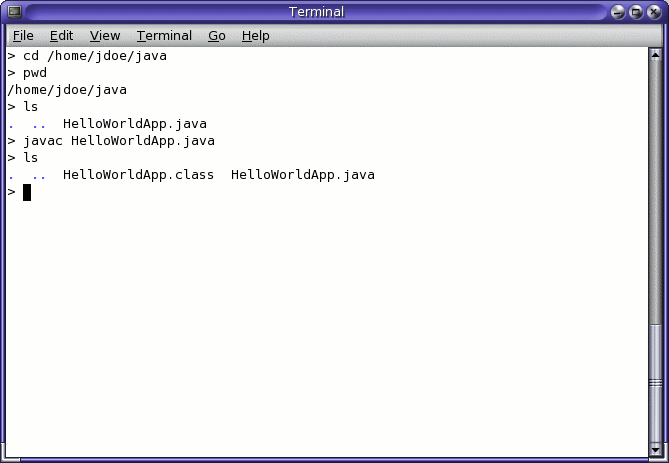
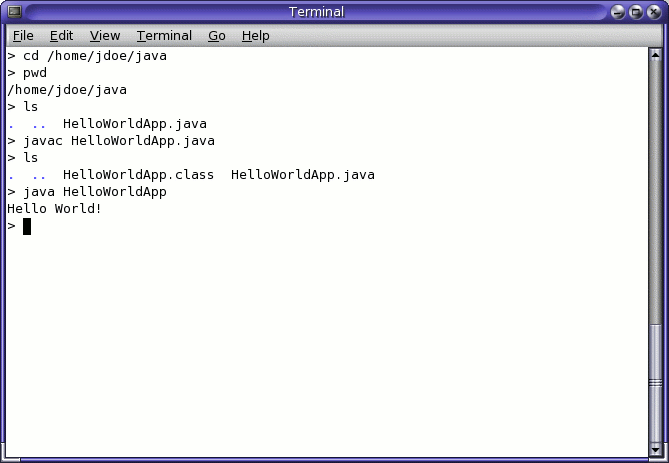

"Hello World!" for Solaris OS and Linux
It's time to write your first application! These detailed instructions are for users of Solaris OS and Linux. Instructions for other platforms are in "Hello World!" for Microsoft Windows and "Hello World!" for the NetBeans IDE.
If you encounter problems with the instructions on this page, consult the Common Problems (and Their Solutions).
A Checklist
To write your first program, you'll need:
The Java SE Development Kit 6 (JDK 6)
You can download the Solaris OS or Linux version now. (Make sure you download the JDK, not the JRE.) Consult the installation instructions.
A text editor
In this example, we'll use Pico, an editor available for many UNIX-based platforms. You can easily adapt these instructions if you use a different text editor, such as
vioremacs.
These two items are all you'll need to write your first application.
Creating Your First Application
Your first application, HelloWorldApp,
will simply display the greeting "Hello world!". To create this
program, you will:
Create a source file
A source file contains code, written in the Java programming language, that you and other programmers can understand. You can use any text editor to create and edit source files.
Compile the source file into a .class file
The Java programming language compiler (
javac) takes your source file and translates its text into instructions that the Java virtual machine can understand. The instructions contained within this.classfile are known as bytecodes.Run the program
The Java application launcher tool (
java) uses the Java virtual machine to run your application.
Create a Source File
To create a source file, you have two options:
You can save the file
HelloWorldApp.javaOr, you can use the following (longer) instructions.
First, open a shell, or "terminal," window.

A new terminal window.
When you first bring up the prompt, your current directory
will usually be your home directory. You can change your current
directory to your home directory at any time by typing cd
at the prompt and then pressing Return.
The source files you create should be kept in a separate directory.
You can create a directory by using the command mkdir. For
example, to create the directory java in your home directory,
use the following commands:
cd mkdir java
To change your current directory to this new directory, you then enter:
cd java
Now you can start creating your source file.
|
Start the Pico editor
by typing When you start Pico, it'll display a new, blank buffer. This is the area in which you will type your code. |
|
Type the following code into the new buffer:
/**
* The HelloWorldApp class implements an application that
* simply prints "Hello World!" to standard output.
*/
class HelloWorldApp {
public static void main(String[] args) {
System.out.println("Hello World!"); // Display the string.
}
}
Type all code, commands, and file names exactly
as shown. Both the compiler (
|
Save the code in a file with the name
HelloWorldApp.java.
In the Pico editor, you do this
by typing Ctrl-O
and then, at the bottom where you see the prompt File Name to write:,
entering the directory in which you wish to create the file,
followed by HelloWorldApp.java. For example, if you wish to
save HelloWorldApp.java in the directory /home/jdoe/java,
then you type /home/jdoe/java/HelloWorldApp.java
and press Return.
You can type Ctrl-X to exit Pico.
Compile the Source File into a .class File
Bring up another shell window.
To compile your source file, change
your current directory to the directory where your file is located.
For example, if your source directory is
/home/jdoe/java,
type the following command at the prompt and press
Return:
cd /home/jdoe/java
If you enter pwd at the prompt, you should see the current
directory, which in this example has been changed to /home/jdoe/java.
If you enter ls at the prompt, you should see your file.

Results of the ls command, showing the .java source file.
Now are ready to compile the source file. At the prompt, type the following command and press Return.
javac HelloWorldApp.java
The compiler has generated a bytecode file, HelloWorldApp.class.
At the prompt, type
ls
to see the new file that was generated:
the following figure.

Results of the ls command, showing the generated .class file.
Now that you have a .class file,
you can run your program.
If you encounter problems with the instructions in this step, consult the Common Problems (and Their Solutions).
Run the Program
In the same directory, enter at the prompt:java HelloWorldApp
The next figure shows what you should now see.

The output prints "Hello World!" to the screen.
Congratulations! Your program works!
If you encounter problems with the instructions in this step, consult the Common Problems (and Their Solutions).